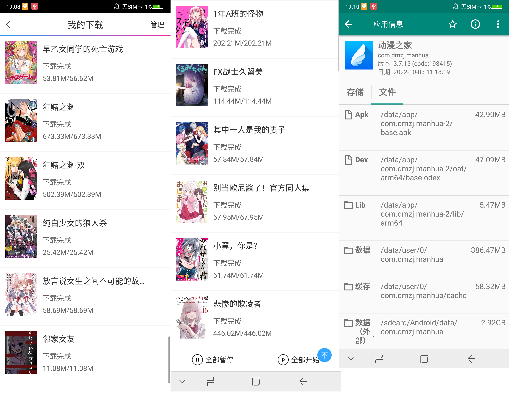

文件管理的基本素养
资源整理
我也未曾想过，我竟然会想写一篇有关文件整理的文章。不知从何时起，整理对我来说就像呼吸一样自然，看到乱了整理一下、无聊的时候检查一下、桌面乱七八糟排一排。但我还知道一点，不喜欢整理的人也有不少，因为我对计算机比较熟悉，所以经常帮宿舍附近的人做一些开发上的调整。不得不说有些人的桌面是真的乱，分类啥的不存在，软件和各种文件毫无顺序地布满了桌面，说实在的，使用的人能顺利地在里面找到想要的东西也真是厉害。当然这只是我的吐槽，因为并不是所有的人都像我这类人那样对数据敏感，对他们而言，数据不是在云端，就是没啥用，手机电脑什么的也是随便换，不存在数据迁移啥的，缺的东西再下载就完事了。甚至他们连手机上的文件管理器都没打开过，这类人确实是有的，别质疑。我也见过不少人，特别是搞创作、搞开发的人，他们一般对数据比较敏感，所以至少分类整理的基本想法都是有的，迁移自然也就方便了许多。
那么有关文件整理，有什么可以讲的吗？不就是一个习惯罢了，而且怎么整理好像也会随不同的人大相径庭。但是我们有些可以用来参考的通用原则，首先我们只从资源本身来考虑，而不考虑分类的问题，分类是习惯的问题，一般通过文件夹来实现，于我而言，过程很简单，先大后小，一般会先简单确定大类，直接将资源扔进去，资源是不断增加的，当某一类资源的数量过多时，就可以进行细分类，再相应地搬家即可，也就是说分类是随时间变化而动态改变的。
资源的来源一般就两种，网络收集和自制，这是最基本的重要程度分类。网络收集是大概率可再生的，一般得到资源的同时要保留来源，即url链接，如果在某次转移中，出现从大内存到小内存的情况，一种方案是云端存储，也是大多数人的方案，而且还能保留自制资源，而考虑比较极端的断网转移情况，自制是必须保存的，能缩减的也只有可再生资源了，删文件保url是较好的方案。有人可能觉得，谁没事去保留链接啊，在p2p网络上，链接还是很常见的，最常用的就是bit种子和磁力链接，所以自然会留下链接。我知道大部分人都是https协议来下载文件的，这种情况下，浏览器会自然地把链接保留下来，但是这一般都不能用的，因为Web上的资源传输，通常是动态验证的，你再次访问链接的时候会因为动态参数失效而无法再次下载，这是防爬虫的一种手段。这时我比较喜欢使用浏览器书签功能，特地开辟一个书签文件夹来保留下载链接地址，觉得重要的链接就收藏起来，这算是一种习惯吧，转移的时候可以直接用书签的导入导出，因为书签还有标题数据，所以还能直接进行书签搜索。最后情况是软件所下载的东西，一般我们都可以靠找到下载路径来获得数据，一般保留文件名加软件即可，比如网易云音乐文件名自带音乐名，用ls >> res.txt啥的就行了，当然有些软件不会文件中保留信息，而是使用一堆无序的数字字母组合，比如bilibili的缓存视频，这种情况下通常会有一个元数据表，它保留了信息和相应的文件指向，通常都很好找。稍麻烦的是没root的手机，元数据又存储在系统目录里，这个情况我们在下一部分以一个实例来说明。还有一个情况是破解资源，如游戏cg提取之类的，这个时候保留破解流程和工具就行了，而且多数情况下都是即拿即用的，也没有特的地保留这些数据。
善用压缩包，这个十分重要，压缩包可并不是单纯压缩体积那么简单，最重要的是压缩包在传输中的作用。在多数的传输协议中一般不能保留目录结构，在开发中这是很致命的，所以通常传输开发项目的工程文件时，通常是压缩包形式，gz、xz、7z之类的。在linux体系下，归档和压缩是分开的，tar是归档，tar.gz则是归档的基础下使用gz对应算法进行压缩，前者保留目录结构，后者减少传输的流量。压缩还有一个作用是减少文件的碎片化，熟悉文件系统存储机制的应该知道，文件是分块存储的。有人可能觉得，压缩可能会破坏我们之前的索引结构，这是属实的，但压缩通常发生在自制的情况，如果是下载的话，对于碎片化文件发布者会自己把它压缩好，这也是适应传输的较好形式，大可放心而不用过于在意。
我们要考虑丢失承受度，即面临数据丢失你能否承受。搞云端存储的，其实还是挺辛苦的，首先硬盘要正版，其次还要保证硬盘在保修期内，最后要组成阵列来防止丢失。对于外伤肯定是无能为力的，烧了、碎了什么的也只有时间倒流才能拯救了，对于很重要的数据一定要云端备份，要是云端都保留不住就更被说你本地了，那时的环境到底有恶劣啊。而内伤是有被治疗的可能的，比如常用的硬盘结构，只要扇区没坏，总有办法把数据给复原出来的。但是说句实话，对我而言，好像也没什么数据不可丢失，我也只是有收集癖，丢了再去找就完事了。这也是我很伤心一点，没有想法，没有创造，没有一点属于自己的东西。
资源转移
你可能不知道现在转移一个软件数据有多难，真正做起来你的心态会崩掉的。先来看看我们要转移的目标
在没有root的前提下，对此你得知道一点，现在要root是十分困难的一件事，首先官方不提供recovery模式，你得刷第三方rec，而此时你一般需要向产商要BL解锁入口，这样你会失去保修，手机可能变砖，不过更要命的是它会清除所有数据，那就没备份的必要了。有root肯定可以畅通无阻，但没root的话，我们唯一能移动的数据只有/sdcard/Android/data内的数据，虽然它看起来是数据的大头，2.92G的漫画数据都在里面，但是问题是不能识别。比如前不久我玩过的summerpocket，你安装后把数据移进去再运行是不可行的，你必须先运行一下更新系统内的数据，再移动外部数据才行。通常情况下/data/app和/data/user/0才是软件的核心数据，只有将它们复原才能实现完美备份，其实只要有后者就够了，前者是死数据一安装就有了，不过在以前安卓版本/data/data。我们只能在权限上做功夫，shell权限就是一个很好的工具，它在root之下却在我们一般用户的权限之上，通过adb工具的adb backup完成，但事实却是
这是因为大部分应用的“allowbackup”参数被设置为了false，导致无法提权，据说为了啥数据安全。我们其实可以反编译修改这个参数，但在无root的情况下签名验证过不了，无法覆盖安装，而卸载重装的话，这些数据又会被清除。有人说可以通过adb来实现保留数据卸载，后来我发现，保留数据会导致系统应用让你安装失败，现在系统必须让你强制完全卸载才行，我只想说现在的安卓真是另人无语的不自由。
其实另一种方法是应用软件对自身拥有的绝对权限，通过应用替身来访问自身的数据文件，比如Termux对它自身目录下的文件具有绝对控制权，这一篇文章通过替身的方法来实现数据的转移，遗憾的是这是有前提的，每次应用都是在替身载体上安装的，比如作者所使用的太极虚拟框架安装。我没有这样的习惯，所以也没有实现的可能。其实，我想过一种破解应用私签的方式，但仔细一研究发现，签名一样也是信息摘要的认证方式，理论上像md5一样没办法破解，也难怪现在也没有人给出破解签名的方式。
结论是，你只能被产商拿捏，让他们给你出一个云端备份的功能，来帮你备份，自己实现的可能性基本为零。唯一比较幸运的可能是Termux了
虽然它有近9.56G的内部数据，但可以通过它自身的命令行打包并移出数据。我想说啥呢？就是软件的开发商是可以令应用获取到数据，并放到云端的，但是他们并没有这么做。这里我又想起一个事就是进入开发者模式想进行一下USB调试，都得用一些特殊的方式才行，只能说太恶心了，安卓早就不是以前那个安卓了，最近我才知道，现在手机系统里都能大胆地放广告了，而且还是几年前的时候，因为我一直都在用老手机所有都没发现。没有Android本源的自由，还得跟着产商的步调走，只能说我放弃转移数据了，重下算了。
git的使用
接下来我想说说git这玩意，很多人可能把它和github或gitee或gitlab之类的等同了，甚至有人把它当网盘使用，其实我也差不多，但是它们都存在内存限制，拿来存储一下工程目录倒是没问题，几个G的游戏就根本放不进去了。所以gitXXX等同于网盘肯定是不对的，因为它们只是提供了一个远程git服务器而已，也就是说，如果想要的话，我们自己也是可以搭建git服务器的，自己也能实现一个gitXXX之类的，不过嘛，它们提供了一个可视化的界面，实际的核心只有git这一个指令而已。
我们先来本地探讨一下git指令，我们先来确定一下git的整体定位，它相当于一个“文件夹的记录板”，以我本地的hexo工程来说明一下这个事。
我们应该要将git视为一个可撤销的文件工程项目，其中的.git代表了这确实是一个git项目，而git还有几个比较重要的文件，比如.gitignore和.gitattributes，但我们不应该把它视为git工程文件的成分，而是某种可以改变git行为的文件，后面我们讲流程的时候会说到。可以看到云端和本地的区别就是，本地有.git而云端没有.git，但所看到的不一定是事实，事实是云端只有.git，而本地除了有.git还有其他内容。而云端则是为你提供了一个.git存储服务，实际上.git已经包含了大量信息，可以将你每次提交的内容复原回来，而云端则是将最近的提交内容放在了首页而已。建立一个git工程十分简单，像下面这样几下就可以完成
此时我们的gituse形成了一个git项目，git实际上可以文件夹下逐文件的跟踪撤销，但我还有大部分的开发者都是采取“全部跟踪+.gitignore”的方式，简单来说就是为了方便，开发者一般要有一个好习惯，将中间文件和目标文件单独放到一个文件夹并通过.gitignore忽略跟踪，这样可以做到只传递源码而大幅度减少传输内存。什么是跟踪呢？我们将git的工作流程通过下面的图展示出来。

我们先看在本地的左边三个东西，workspace(工作区)，staging area(暂存区/缓存区)，local repository(版本库或本地仓库)，它们在本地文件的对应关系也很简单，工作区就是除.git以外的所有gituse下的文件，缓存区和本地仓库都在.git内，看下图

git add 文件是使用通配符的方式将文件放入缓存区，我们通常都是git add *或git add .直接将当前目录下所有文件纳入缓存区，当然它有两个行为值得我们注意，首先它一定会忽略.git文件夹，其次它会忽略.gitignore所匹配的文件，不过这是有前提的，就是之前没有被纳入管理中，比如我的hexo工程，里面虽然写了忽略node_modules但是因为之前没有先写.gitignore就git add 所有，导致现在git add 所有已经不能.gitignore了，其实也可以通过git rm来移除跟踪，但不知道为啥就是不想做。还有一种情况是空文件夹不会被跟踪，像下面这样
可以看到dir没有被跟踪，但可以通过.gitkeep来实现跟踪
值得注意的是.gitkeep只是一种习惯，它将一个空文件夹变成非空从而实现了对空文件夹的跟踪，换言之，写成.nofile或者任意的东西都是无所谓的。至于git commit则是将缓存区的东西放入本地仓库，其实有些人可能和我一样，为什么非要有git add加git commit两个步骤，而且还得加个message。首先我们先明确一点，对于git add我们默认以全部文件为习惯，那么缓存区相当于一个文件的一次撤销板，就像window那个记事本，但那个记事本可不是什么好玩意，只能撤销单次，能不用就别用了。执行一次git add相当于将当前的工作区文件进行了一次保存，如果后来对工作区进行了大改动，文件结构都变了，可不是单文件撤销那么简单，那我们可以通过git checkout .来回复上一次的保存，当然还可以具体到文件上。如果每次这样的保存都放到仓库去回退的话，是很消耗内存的，特别是大项目，所以仓库的每次版本的改动一般都比较大，当然分支是可以合并的。继续回到流程上来，通过git commit可以将缓存区的数据放入本地仓库，而git reset HEAD .则是将仓库数据放回到缓存区，HEAD表示当前仓库的版本，本地仓库以树状的方式存储了每次commit的内容，对于个人而言只是一个单线，树状只会发生在多人协同开发的时候，后期还会出现合并的任务。以我们个人的视野来看，本地仓库的每个版本相当于一次文件夹的快照，切换版本其实就相当于查看某次版本的内容，可以通过git checkout 版本的方式将仓库的版本的内容复原到工作区，HEAD表示当前执向的分支，一般是最新分支。至于本地仓库与远程仓库的交互就比较简单了，设置好地址以后，git push同步到远程，git fetch同步到本地，至于git clone实际建立在你本地没有仓库的情况，可以直接从远程获取.git并且将最新分支复原到工作区，一般情况下如果只要一次源码的话，最好要将.git删除掉，因为它太吃内存了，或者直接用远程服务所给的zip打包下载也行，它会自动去除.git文件。
至此git的基本思想已经差不多了，总体内容不多，首先远程只保留.git，其次缓存区相当于一个一次撤销板，其中的步骤不会被记录在仓库中，最后仓库记录了每次提交的文件结构和内容可以完美的实现复原。其中的转换命令可以看之前的一张图，我们其实可以把git理解成“附带撤销功能的文件夹记录板”，当然这只是对个人而言，git真正强大的在于多人协同的分支管理，可惜我用不到就是了。
电子网络
其实网络的本质是一个低成本的数据传输平台，说来也难受，世界上最挂念的无非就两个东西，一个是现世的亲人，另一个竟然是电子设备上的数据。我曾想过离开网络，离开手机电脑，但发现一旦离开我将一无所有，拥抱生活可真不简单，有人喜欢嘲讽为虚拟产品消费的行为，但他们可能不知道对于穷人来说它们可是唯一的娱乐了。穷人买得起手机吗？我说得可是娱乐啊，而不是温饱，如果温饱也不能满足，没有可支配收入的话，我认为他不在讨论的范畴内，我们想讨论的穷人是可支配收入少的人。“穷人”的定义是啥就别管了，不然你让我怎么称呼我想讨论的这类人呢？在此基础上，你就会发现现实中很多活动太耗钱了。其实有些东西，我不是很理解，我周围有几个人很喜欢去一些店里玩一次几百块的像剧本杀之类的桌游，我在想这东西就不能自己买一副，随便找个安静的地方玩吗？网店上的一副剧本杀，只能玩一次要50-100，另外在城市里想找个安静的地方竟然超乎想象的困难，还不如去店里，分摊一下也不多，还能有个好的环境。如果放到网络上，就会大不相同了，成本低，人好找，次数随便，网络将人联系起来的能力可不能估量。现实中的消费会随次数而不断激增，但手机电脑的话，除了开始的投资，就只要电费和网费，而且内容丰富，玩法众多，想玩就玩，次数无限。有人纠着网络的一点去批判还是有些片面了，无论怎么说，网络绝对是最便宜的消遣了。
或许有人更加当心的是，手机电脑对身体健康的影响，只能说“优胜劣汰适者生存”，我们应该反向思考如何去适应现代的娱乐方式，就算是放到现实中，环境早就大不相同了，周围充满了各种用于传输的高频人造电磁波，比如wifi的频率在2.4GHz到5.8GHz之间，你怕不怕，不过像用眼疲劳之类的就别去适应了，但它跟手机没啥关系，你看书久了也是一样的。当然还有网传的lcd和oled显示屏中，后者更伤眼睛的说法，确实有一定道理了，不过我所用的设备都是lcd显示屏所以也无所谓了。有关网络资源一定要提的一点是，正版付钱，盗版绝对白嫖，简而言之“倒卖狗”举报就完事了，当然对于他们而言成本低收入高，杀肯定是杀不完的，只能说尽力而为，不要交智商税就行了，还有千万不要听他们说什么“资源收集来之不易”这样的鬼话，因为这样的现状是他们一手造成的，我就点到为止了。
资本赢家都是投机商
最近看到一个有趣老师的视频，他说如果你想要知道赚快钱的方法，就打开中华人民共和国刑法，里面写满了你想要的东西。曾经有人跟我说，“黄赌毒”中的“黄”好像只违法没有犯罪，比如“嫖娼”就没写在刑法里，当要知道“嫖娼”是亏钱的，你要反过来看，“卖淫”才是赚钱的，自然也是犯罪的，也确实如此。我们扯远了，我们从最常见的股票交易说起，我一直觉得这东西的合法存在很不合理，我甚至觉得它和赌博没有区别，不会真的有人觉得自己可以通过各种金融咨询、国家政策、市场走向、公司状况之类的东西来推出股票的走势吧？事实是，除非一些特别明显的东西，否则你知道的当韭菜罢了。股票最开始只是一种投资凭证，放在现在就是购买发行股，但有些人却很聪明，他告诉别人这家公司未来会有很多的盈利，如果你买下这张股票，就可以获得接下来所有的利润了，一旦很多人出现了类似的幻想就会出现价格竞标的情况，而买股票的投机商很快的就能获得比股票原价更高的回报，这就形成了股票交易的原型。这时就会出现第二中投机商就是中介了，比如你找不到想要买你股票的人，但中介那里有，于是中介就可以获取佣金，中介也就变成了股票交易所，佣金变成了手续费。我很喜欢把中介称为投资商，因为他们好像没做什么却可以很赚钱，比如银行，我们把钱借给银行利率不高，但银行借给公司却有更高的利润，银行甚至还能拿钱去搞金融投资，凭什么，凭人脉。其实最另人叹息的就是，资本和人脉才是最值钱的，“人脉”是什么呢？可不是说你认识多少人，而是说你可以为多少人搭桥牵线，供需匹配程度有多高，它有两个典型的代表，“广告”和“平台”，对于广告而言，无论是提供货源的还是购买物资的，都不是很好，反倒是中间投广告的可以两头通吃，以较低的成本获得极高的利润。“平台”就很常见了，购物平台、交友平台、视频平台、直播平台等等，拿直播举个例子，平台可以搜刮直播主超过50%的利润，干活的是直播主，平台只是给你提供人，现实中的经纪公司也是一回事，他们做了什么吗？以资本提供平台的搭建，构建人脉提供客源。这种东西只有人有胆量，能交流都有实现的可能，但现实却是“饱和然后全员进入虚拟世界”。不过目前我看到的说法是，经济在倒退，基本需求已经从虚拟的精神上又在逐渐变回现实的物质上，不过我没什么感觉就是了。“钱很值钱这件事”还需要说明吗？在我看了“先富带动后富”从来都是个可笑的东西，只要没有共产主义，资本仍然存在，它只会让钱成为值钱的东西而不是技术。就算你的技术再高明，没有钱研发，没有钱买设备，你需要依赖资本，准确来说是大量资本，银行能起来不单单依靠它的客户流量，还依赖于用大量客户而产生的大量资本，我们所认为的值钱的东西，所以你给企业借钱不会高利润，因为很少，但银行就不一样了。一旦技术依赖于资本而活，但资本却可以不依赖于技术，那么就会形成不对称的支配市场，技术自然也不会比资本值钱。资本为什么会如此值钱，因为它可是一般等价物啊，它可以对所有实际物体形成支配市场，贫富差距只会变大重来不可能变小，除非能削弱资本的价值，但除了共产主义这种不切实际的幻想是不可能的，我们只能采取一些策略来旁敲侧击，像分级收税之类的。最后我们来正视一下“投机”是什么，投机实际上就是对社会的利用，人因社会而组织起来，在人类的群体生活中，利用好社会才是榨取最大利润的根本，以前的宗教和君主专制其实都是类似的思想，只不过现在换了个名字叫资本，而资本的起源是生产力提供的产物，是人类发展的必然，未来是否会出现新的统治者呢？我就不得而知了。
无知的恐惧
有人可能怕没钱，但我却更怕无知。想来想去，钱也就是那么一回事，赚不到骂自己就行了，一旦发生什么大灾难不就是一堆废纸吗？但无知必回让你坠入深渊，现在审视一下自己为什么会如此珍视电子资源，或许是因为我害怕失去里面的知识。我上面会提两次资本，其实也是如此，资本令我们想要获取资源变得困难，让我们想要转移资源变得困难，如果不了解手机的构造，又怎么敢去拆解手机呢？依稀记得以前还不是一体机的时候，手机的零件想换就换，还有一大堆第三方制作商，现在呢？如今连安卓的底层系统都不太能信任了，它已经被产商该得面目全非了。知识十分重要，它可以带来很多东西，但很多东西都不能带来它，而且它具有极强的抗风险能力。但我依旧对无知感到恐惧，因为能完全记住的东西太少了，容易忘记的东西太多了。这其实也能验证验证我最喜欢的两个AVG主题，知识和记忆。我们的记忆力不够强大，无法做到过目不忘的地步，但计算机却能做到，所以在知识方面，我们不仅要依赖记忆，还要依赖计算机的辅助，所以我们才会倍加珍惜那易碎而脆弱的电子资源。这是其实有个很有趣的想法，人负责资源的组织，使其更容易被检索到，而计算机则负责存储编解码，这就是我所认为的“资源整理”的重要性，这是对无知恐惧的一环，我们害怕资源虽然唾手可得，但我们无处寻匿，在混乱之中迷失自我，因此我们喜欢秩序，它是知识的代表，讨厌凌乱，它是无知的象征。当你认为世界毫无规律可言之时，大概是自己过于无知了吧，害怕无知和害怕无序其实是一回事。这么看来，经常整理的习惯，或许只是在缓解自己的恐惧，而减少对无知的压力罢了。在资本的世界里活得很痛苦吧，没关系，拥抱知识吧。